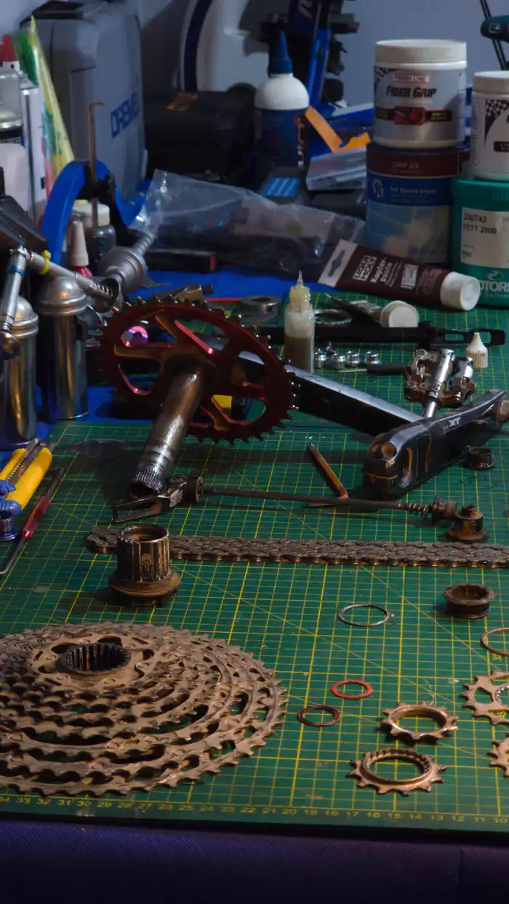
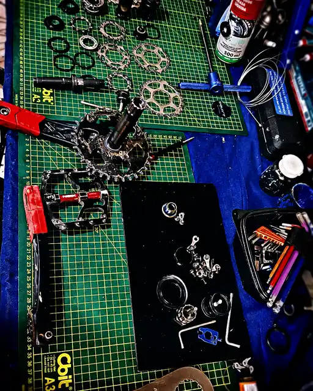
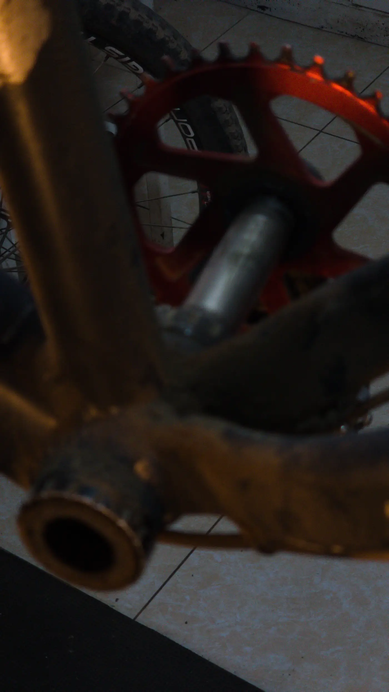
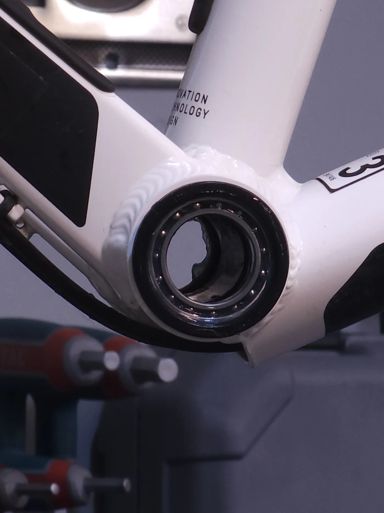
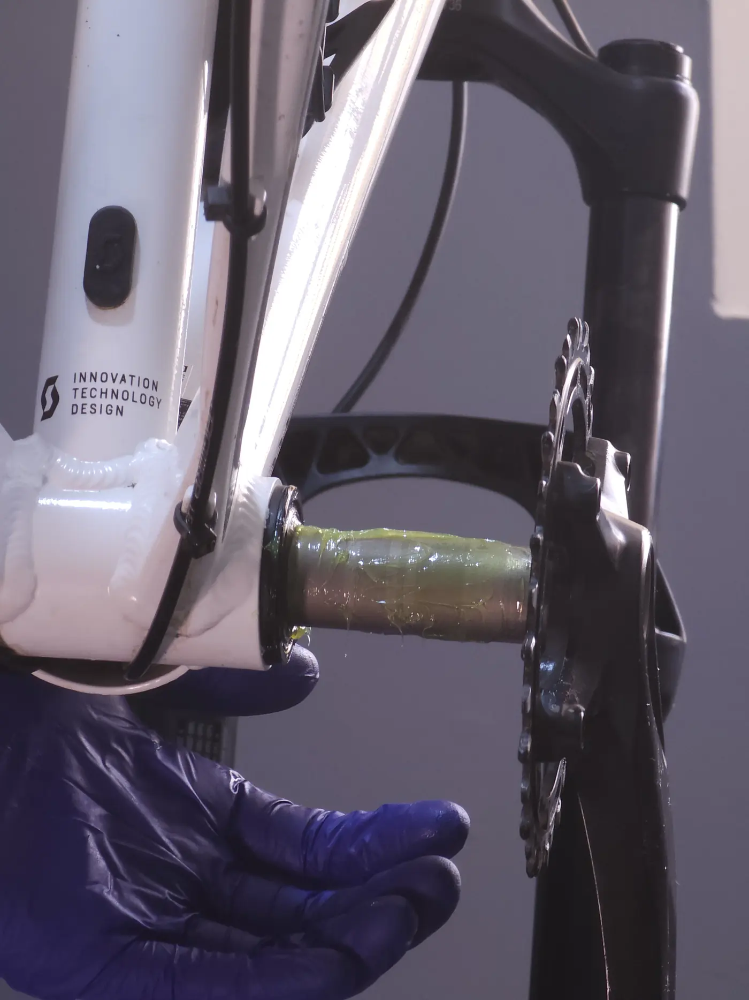

El crujido del pedalier casi nunca es el pedalier: si suena sentado suele ser la tija; de pie, el cuadro propaga el ruido y el origen real suele estar en pedales, calas, platos o el núcleo trasero. Diagnostica por descarte. En el BB: roscado = limpiar y grasa/antiagarre a ~35 N·m; press-fit = nada de grasa, usar compuesto de retención (Loctite 609/641/480) y, en carbono, activador. Apretar de más no calla: rompe.
Pocos ruidos desesperan tanto como el crujido que aparece al pedalear con fuerza. Y pocos se diagnostican tan mal: la mayoría desmonta el pedalier tres veces, sigue sonando, y nadie le explicó que el cuadro entero funciona como caja de resonancia. Esta guía separa la física real del crujido del mito de taller, con el procedimiento por descarte y la química correcta para cada tipo de pedalier.
1. El verdadero responsable: ¿es realmente el pedalier?
Antes de tocar nada, ubica cuándo cruje. Es la pista más valiosa.
Si cruje sentado, pedaleando suave, la probabilidad de que sea la tija de sillín es altísima: la interfaz tija–cuadro micro-desliza con tu peso. Si cruje de pie, bajo torque, el bastidor se tuerce lateralmente y el sonido viaja por los tubos huecos; ahí entran los falsos culpables.
Antes del pedalier: roscas de los pedales secas (engrásalas), calas y la interfaz zapatilla–pedal, tornillos de los platos (chainring bolts), tija, dirección/potencia, y el núcleo de la rueda trasera (cambia la rueda de prueba y si el ruido se va, era la rueda). El pedalier se revisa al final.

2. Press-fit vs. roscado: por qué importa para el ruido
Hay dos familias de pedalier y crujen por causas distintas. El roscado (BSA, ITA, T47) atornilla las cazoletas al cuadro: si cruje, casi siempre es rosca seca o par insuficiente. El press-fit (BB30, PF30, BB86/BB92) introduce las cazoletas a presión: si cruje, es por tolerancia del cuadro —una caja ovalada, no perpendicular o sobredimensionada— que deja micro-mover la cazoleta.
| Estándar | Tipo | Diámetro caja | Notas |
|---|---|---|---|
| BSA (inglés) | Roscado 1.37"×24T | 34,8 mm | El más fácil de mantener silencioso |
| T47 | Roscado | 47 mm | Roscado moderno para ejes de 30 mm |
| BB30 / PF30 | Press-fit | 42 mm | Tolerancia muy estricta; sensible al crujido |
| BB86 / BB92 | Press-fit | 41 mm | Cazoletas de resina/aluminio a presión |
Conviene desmontar el mito: press-fit no es "basura". El crujido no nace del concepto sino de la precisión de fabricación del cuadro. Con tolerancias correctas, un press-fit es tan silencioso como un roscado; con una caja mal mecanizada, ningún sistema se salva.

3. La física del crujido: micro-movimiento vs. rodamiento
Aquí está la distinción que casi ninguna guía hace y que decide la solución. Hay dos crujidos distintos:
Micro-movimiento (fretting). Dos superficies en contacto que se deslizan unas micras bajo carga y vuelven: la cazoleta contra el cuadro, la rosca floja, el plato contra la araña. Genera un chasquido seco bajo torque y desaparece al quitar la carga. La cura no es lubricar el movimiento —eso lo perpetúa— sino bloquearlo.
Fallo del rodamiento. El cartucho tiene picaduras (pitting) o contaminación: gira áspero, con saltos, y suele venir con juego. Aquí no hay compuesto que valga: se reemplaza.
Engrasar un press-fit que se mueve. La grasa reduce la fricción del micro-deslizamiento, facilita el fretting y desgasta el alojamiento de carbono o aluminio. A las pocas salidas la grasa migra, entra aire y el crujido vuelve peor. Press-fit que cruje = compuesto de retención, no grasa.

4. Diagnóstico paso a paso (por descarte)
¿Sentado o de pie?
Sentado → sospecha tija primero. De pie → BB o falsos culpables. Esta sola observación ahorra horas.
Pedales y calas
Desmonta los pedales, limpia y engrasa las roscas, revisa calas y tacos. Es la causa más común y más barata.
Platos y dirección
Revisa el par de los tornillos de los platos y la interfaz de la araña; comprueba dirección y potencia.
Rueda trasera (núcleo)
Monta otra rueda y rueda de pie. Si el crujido desaparece, era el núcleo/masa, no el pedalier.
El pedalier, al final
Recién ahora desmonta bielas y cazoletas. Gira el rodamiento con el dedo: áspero = cambiar; suave = es micro-movimiento de la interfaz.

5. La solución correcta según el sistema
Limpieza absoluta primero: desengrasa roscas o alojamiento con alcohol isopropílico hasta dejarlo seco. Luego, el compuesto correcto.
Roscado (BSA/ITA/T47): grasa o antiagarre en la rosca; en titanio, antiagarre obligatorio. Press-fit BB30 (metal-metal): Loctite 609 (retención, rellena hasta ~0,13 mm). Press-fit desmontable / copas de composite (PF30/BB86): Loctite 641 o 480. Cuadro de carbono: el carbono es inerte; el anaeróbico necesita activador/imprimación (p. ej. 7649) para curar. Alternativa robusta: cazoletas que se enroscan entre sí (thread-together) o shims si la caja está sobredimensionada.

6. Pares de apriete reales
| Componente | Par | Nota |
|---|---|---|
| Cazoletas roscadas (BSA/T47) | 35–50 N·m | A su par, no más |
| Precarga de biela (dial/arandela) | 1–2 N·m | Solo quitar juego lateral |
| Tornillos de pinza de biela | 12–14 N·m | Shimano Hollowtech |
| Tornillos de plato | Según fabricante | Limpiar y aplicar fijador medio |
Sobreapretar la precarga mete carga axial sobre rodamientos rígidos de bolas y los destruye por fricción. El dial de precarga solo quita el juego; el par real lo llevan las cazoletas. Apretar de más no silencia: arruina.
BikeLab Studio.
Preguntas Frecuentes
¿El crujido al pedalear siempre es el pedalier?
No. Si cruje sobre todo sentado, lo más probable es la tija de sillín. Al pedalear de pie, el cuadro se tuerce y propaga el sonido; en muchos casos el culpable real son las roscas secas de los pedales, las calas, los tornillos de los platos o el núcleo de la rueda trasera. El pedalier se revisa al final, por descarte.
¿Le pongo grasa al pedalier press-fit para que no cruja?
No en press-fit. La grasa lubrica el micro-movimiento de la cazoleta y a medio plazo acelera el fretting y devuelve el crujido. En press-fit se usa compuesto de retención (Loctite 609 metal-metal, 641 desmontable, 480 con copas de composite); en carbono se requiere activador. La grasa o el antiagarre son para roscas (BSA/T47).
¿Apretar más fuerte elimina el crujido?
No, y suele dañar. Las cazoletas roscadas van a su par (~35–50 N·m), no más. La precarga de la biela solo quita el juego lateral con muy poco par (1–2 N·m); sobreapretarla mete carga axial sobre los rodamientos y los destruye. Apretar de más no calla: rompe.
¿Press-fit es un mal diseño que siempre cruje?
No necesariamente. El crujido no nace del sistema sino de la tolerancia del cuadro: una caja ovalada, no perpendicular o sobredimensionada provoca micro-movimiento. Con tolerancias correctas, compuesto adecuado y, si hace falta, cazoletas thread-together o shims, un press-fit puede ser tan silencioso como un roscado.
¿Cómo distingo si cruje la cazoleta o el rodamiento?
Quita las bielas y gira el rodamiento con el dedo: si se siente áspero o con saltos, el cartucho está dañado y se cambia. Si gira suave pero la bici cruje al aplicar fuerza real, la cazoleta se mueve dentro del cuadro: la solución es compuesto de retención o ajustar la tolerancia, no cambiar el rodamiento.
Referencias
- Park Tool — Troubleshooting a Noisy Drivetrain.
- Hambini Engineering — Bottom bracket press-fit and creaking: análisis de tolerancias; grasa vs. compuesto de retención.
- Fit Werx / BBInfinite — Causas de caja no perpendicular/ovalada; Loctite 609 y compresión radial.
- Henkel Loctite — Fichas técnicas 609 / 641 / 480 y activador 7649 (retención y curado en sustratos inertes).
- Estándares de caja de pedalier (BSA 1.37"×24T, T47, BB30 42 mm, BB86/BB92 41 mm) y pares de apriete de fabricantes (Shimano, SRAM).